Capítulo 26 Series de Tiempo
¿Dónde buscar datos?
Para análisis macroeconómico y financiero en Colombia, las fuentes oficiales más usadas son:
- Banco de la República: http://www.banrep.gov.co/
- DANE: http://www.dane.gov.co/
- DNP: http://www.dnp.gov.co/
- Ministerio de Hacienda: http://www.irc.gov.co/irc/es/informacioneconomica
- Superintendencia Financiera: http://www.superfinanciera.gov.co/
El análisis gráfico es el punto de partida
Antes de cualquier modelación, los datos siempre deben graficarse. La gráfica es la herramienta más útil del análisis de series de tiempo: permite detectar tendencia, ciclos, estacionalidad, quiebres estructurales y observaciones atípicas, y orienta toda la modelación posterior.
Ejemplo — PIB en niveles:
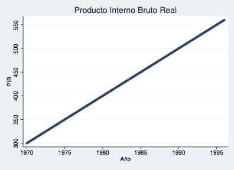
Ejemplo — Crecimiento porcentual del PIB:
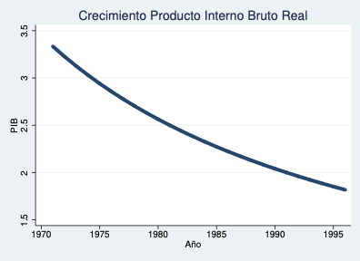
Ejemplo — PIB (otra serie):
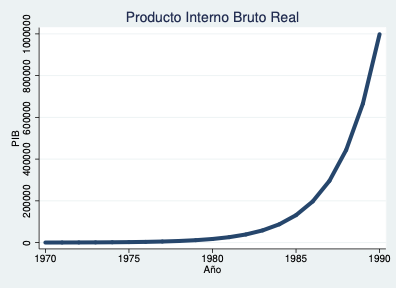
Ejemplo — Crecimiento porcentual del PIB (otra serie):
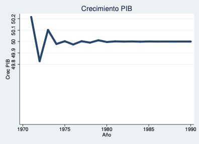
PIB Real Colombia:
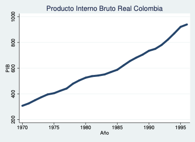
Crecimiento del PIB Real Colombia:
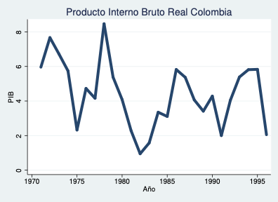
Definiciones clave
Tendencia: describe el comportamiento de largo plazo de la serie — hacia dónde va \(X_t\) cuando \(t\) es grande.
Media: dice algo de la serie solo cuando la tendencia ha sido removida. La idea es trabajar con series de media cero, \(X_t - \bar{X}\).
Ciclo: una serie sin tendencia puede mostrar ciclos. En economía, dada la naturaleza estocástica de las series, los ciclos nunca están demarcados claramente.
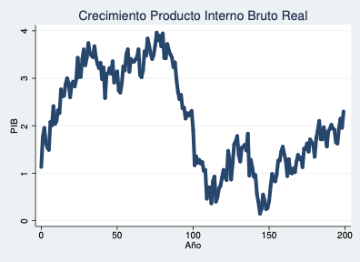
Estacionalidad: son ciclos cortos que se repiten dentro de un ciclo más largo (típicamente, dentro de un año).
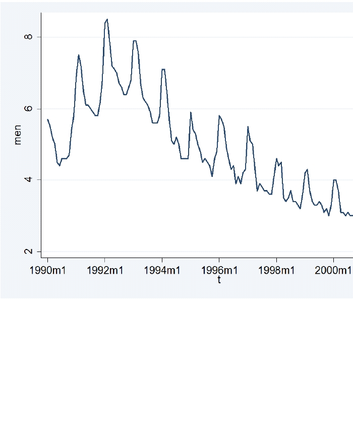
- Determinística: el patrón se repite igual cada año (Navidad siempre es en diciembre).
- Estocástica: el patrón se repite pero su intensidad varía año a año (el consumo como porcentaje del ingreso no es fijo).
Ejemplos de series estacionales: consumo de gasolina en vacaciones escolares, precios de tiquetes aéreos en temporada alta, consumo en noviembre–diciembre por compras navideñas.
Predicción con tendencia y estacionalidad
Una serie con tendencia es fácil de predecir: está autocorrelacionada (alta inercia) y el dato en \(t-1\) contiene información sobre el dato en \(t\).
Una serie sin tendencia es más difícil: hay que verificar si existe un patrón entre observaciones cercanas. Si las observaciones pasadas no proveen información relevante, será imposible predecir usando el pasado — eso es ruido.
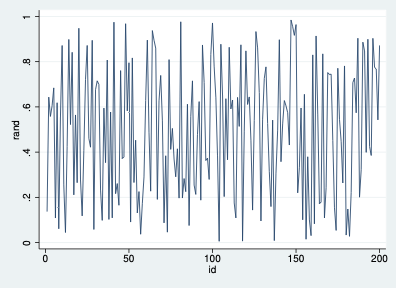
Ejemplo ilustrativo. Considere los siguientes datos trimestrales:
| Año | Trimestre | \(Y_t\) |
|---|---|---|
| 2012 | I | 10.2 |
| II | 12.4 | |
| III | 14.8 | |
| IV | 15.0 | |
| 2013 | I | 11.2 |
| II | 14.3 | |
| III | 18.4 | |
| IV | 18.0 | |
| 2014 | I | ? |
Paso 1 — Tendencia lineal. Estimando \(T_t = 0.944\,t + 10.039\), la proyección para 2014-I es:
\[\hat{T}_{2014\text{-I}} = 0.944 \cdot 9 + 10.039 = 18.54\]
Paso 2 — Componente estacional aditivo. Calcular el residuo \(Y_t - T_t\) y promediar los residuos del trimestre I:
\[\frac{-0.783 + (-3.559)}{2} = -2.171\]
Predicción aditiva: \(\hat{Y}_{2014\text{-I}} = 18.54 - 2.18 \approx 16.36\).
Paso 3 — Componente estacional multiplicativo. Calcular \(Y_t / T_t\) y promediar los índices del trimestre I:
\[\frac{0.929 + 0.759}{2} = 0.8437\]
Predicción multiplicativa: \(\hat{Y}_{2014\text{-I}} = 18.54 \cdot 0.8437 \approx 15.64\).
La elección entre aditivo y multiplicativo depende de si la amplitud estacional es constante (aditivo) o crece con el nivel de la serie (multiplicativo).
Modelos con tendencia determinística
A partir de la gráfica se identifica la forma funcional de la tendencia:
- Lineal: \(Y_t = \alpha_1 + \alpha_2 T + \varepsilon\)
- Exponencial: \(Y_t = \exp(\alpha_1 + \alpha_2 T + \varepsilon)\)
- Logarítmica: \(\ln Y_t = \ln \alpha_1 + \alpha_2 \ln T + \ln \varepsilon\)
- Cuadrática: \(Y_t = \alpha_1 + \alpha_2 T + \alpha_3 T^2 + \varepsilon\)
Si la gráfica no permite decidir, hay que estimar todas las formas y comparar:
- Signos esperados de los coeficientes
- Significancia individual y global
- \(R^2\) ajustado más cercano a 1
- Criterios de Akaike y Schwarz más pequeños
Métodos de atenuación exponencial
Son técnicas no paramétricas que no requieren especificar una forma funcional. La información de \(y_t\) se relaciona únicamente con su propio pasado, no con una tendencia explícita:
- Promedio móvil
- Suavizado exponencial
- Holt-Winters
Modelos ARIMA y la metodología Box-Jenkins
Los modelos ARIMA permiten especificar y estimar pronósticos de corto plazo con muestras grandes. Incluyen, conjuntamente, los cuatro componentes de una serie de tiempo:
- Tendencia
- Ciclo
- Estacionalidad
- Componente irregular
Antes de avanzar, necesitamos formalizar cuatro conceptos.
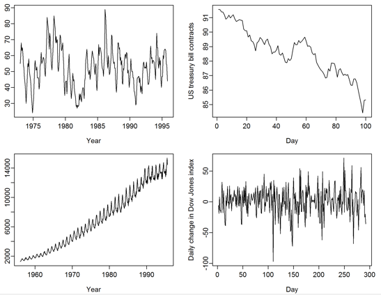
Conceptos básicos
Estocástico: la naturaleza de la serie no es determinística — sus realizaciones son producto de un proceso aleatorio subyacente.
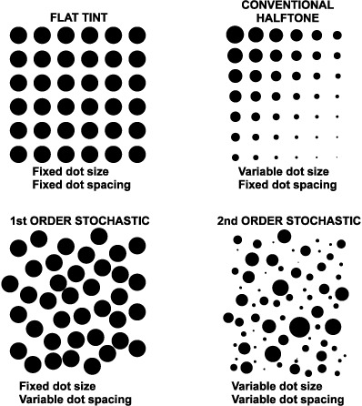
Estacionario: las características probabilísticas no varían con el tiempo. Distinguimos dos versiones:
- Estacionariedad fuerte (o estricta) de orden \(m\): todos los momentos hasta orden \(m\) son invariantes en el tiempo:
\[E(x_1^m, x_2^m, \ldots, x_n^m) = E(x_{1+\tau}^m, x_{2+\tau}^m, \ldots, x_{n+\tau}^m)\]
Equivalentemente, la función de distribución conjunta no depende de \(t\):
\[F(x_1, x_2, \ldots, x_n) = F(x_{1+\tau}, x_{2+\tau}, \ldots, x_{n+\tau}) \quad \forall n, t\]
Estacionariedad débil (\(m=2\)): solo se exige que los momentos hasta orden 2 sean finitos e independientes del tiempo:
- Media constante: \(E(x_t) = \mu\)
- Varianza constante: \(Var(x_t) = \sigma^2\)
- Autocovarianza que depende solo del rezago: \(Cov(x_t, x_{t-\tau}) = R(\tau)\)
En la práctica, “estacionariedad” se refiere a la versión débil. Implica una serie aproximadamente plana, sin tendencia, sin estacionalidad, con varianza constante y autocorrelación que depende solo del rezago.
Ergodicidad: una serie es ergódica cuando la media y la varianza muestrales convergen a sus momentos poblacionales.
Estacionalidad: ciclos dentro del ciclo.
¿Por qué nos importa la estacionariedad?
Muchas técnicas de series de tiempo (incluida la metodología Box-Jenkins) asumen estacionariedad. Cuando la serie no es estacionaria:
- Los modelos tienen mal ajuste
- Se viola el supuesto de varianza constante del error
- Se viola el supuesto de no autocorrelación serial
Por eso, el primer paso de cualquier análisis es verificar estacionariedad y, si no se cumple, transformar la serie hasta lograrla.
Ruido blanco
Un proceso \(\varepsilon_t\) es ruido blanco si:
- Media nula: \(E(\varepsilon_t) = 0\)
- Varianza constante: \(Var(\varepsilon_t) = \sigma^2\)
- No autocorrelación: \(Cov(\varepsilon_t, \varepsilon_{t-\tau}) = 0\) para todo \(\tau \neq 0\)
El ruido blanco es el bloque básico de toda la modelación ARMA: los residuos de un modelo bien especificado deben comportarse como ruido blanco.
Métodos para detectar estacionariedad
- Análisis gráfico
- Durbin-Watson
- Función de Autocorrelación Simple (ACF)
- Función de Autocorrelación Parcial (PACF)
- Análisis de raíz unitaria (Dickey-Fuller y Dickey-Fuller aumentada)
Durbin-Watson: regla práctica visual.
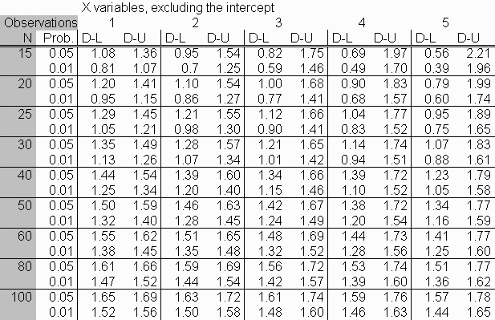
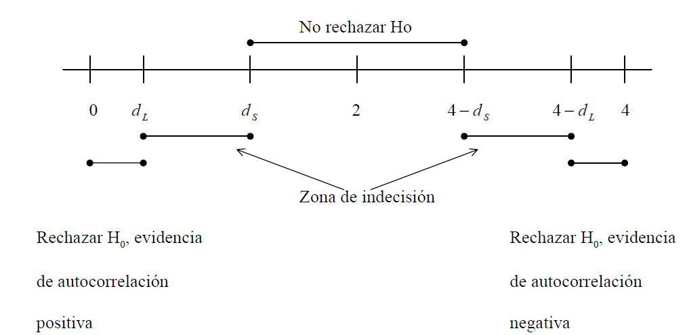
Es una prueba gráfica derivada de la función de autocorrelación simple (ACF), que a su vez depende de la función de autocovarianza.
Función de autocovarianza y autocorrelación (ACF)
La función de autocovarianza mide la covarianza entre \(x_t\) y su rezago \(x_{t-\tau}\), como si fueran dos variables distintas:
\[R(\tau) = Cov(x_t, x_{t-\tau}) = E\left[(x_t - \mu)(x_{t-\tau} - \mu)\right]\]
Cuando \(\tau = 0\), ambas series coinciden y \(R(0) = Var(x_t)\).
La función de autocorrelación (ACF) normaliza la autocovarianza:
\[r(\tau) = \frac{R(\tau)}{R(0)}, \quad -1 < r(\tau) < 1, \quad r(\tau) \sim N(0, 1/n)\]
Estimación muestral:
\[\hat{R}(\tau) = \frac{1}{n}\sum_{t=1+|\tau|}^{n} (x_t - \bar{x})(x_{t-|\tau|} - \bar{x}), \quad \hat{r}(\tau) = \frac{\hat{R}(\tau)}{\hat{R}(0)}\]
Lectura del correlograma:
- Solo se muestra el eje positivo de \(\tau\).
- Se omite el dato para \(\tau = 0\) (siempre vale 1).
- Se dibujan líneas punteadas a \(\pm 2\) desviaciones estándar:
\[\hat{r}(\tau) - 1.96 \cdot \frac{1}{\sqrt{n}} \leq r(\tau) \leq \hat{r}(\tau) + 1.96 \cdot \frac{1}{\sqrt{n}}\]
Si la ACF cae rápidamente a cero, la serie es estacionaria. Si decae muy lentamente, hay tendencia o raíz unitaria.
Correlograma típico:
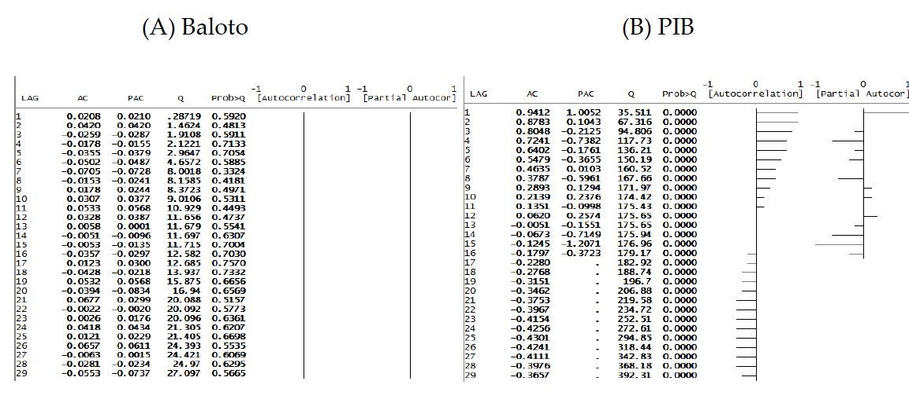
Ejemplo — ACF del Baloto (ruido):
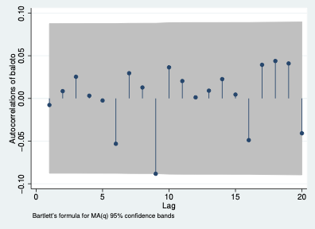
Ejemplo — ACF del PIB (tendencia):
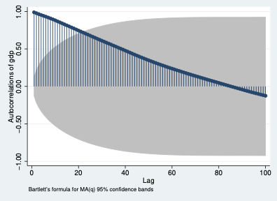
Función de autocorrelación parcial (PACF)
La PACF calcula la correlación entre \(x_t\) y \(x_{t-\tau}\) neta del efecto de los rezagos intermedios:
- ACF: incluye, para el rezago \(\tau\), tanto la correlación directa como la correlación implícita a través de los rezagos menores.
- PACF: mide solo la correlación estricta entre dos puntos separados por \(\tau\) períodos.
La PACF se obtiene como el último coeficiente de la regresión:
\[x_t = c + \alpha_{\tau,1} x_{t-1} + \alpha_{\tau,2} x_{t-2} + \cdots + \alpha_{\tau,\tau} x_{t-\tau}\]
\[r_p(\tau) = \alpha_{\tau,\tau}\]
PACF para el PIB:
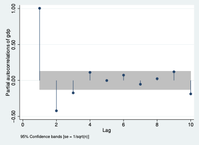
Prueba Q de Box-Pierce
Para evaluar formalmente si la serie es ruido blanco, se prueba la significancia conjunta de las primeras \(\tau\) autocorrelaciones:
\[H_0: r(1) = r(2) = \cdots = r(\tau) = 0 \quad \text{(la serie es ruido blanco)}\]
\[Q = n \sum_{t=1}^{\tau} \hat{r}(t)^2 \sim \chi^2(\tau)\]
Si \(Q\) supera el valor crítico, se rechaza ruido blanco: la serie tiene estructura autocorrelacionada que vale la pena modelar.
Limitaciones del análisis ACF/PACF: es un diagnóstico exploratorio, no concluyente. Debe complementarse con un análisis formal de raíz unitaria.
Caminatas aleatorias y procesos integrados
Una caminata aleatoria es un proceso donde la posición en \(t\) depende solo de la posición en \(t-1\) más un choque aleatorio:
\[x_t = x_{t-1} + \varepsilon_t, \quad \varepsilon_t \sim N(0, \sigma^2)\]
Caminata aleatoria pura, sin intercepto:
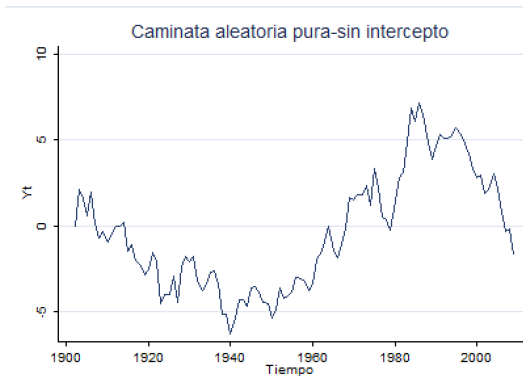
Iterando:
\[x_t = x_0 + \sum_{s=1}^{t} \varepsilon_s, \quad E(x_t) = x_0, \quad Var(x_t) = t \sigma^2\]
La varianza crece con \(t\) → no es estacionaria.
Variantes:
- Con tendencia (deriva): \(x_t = \alpha + x_{t-1} + \varepsilon_t\)
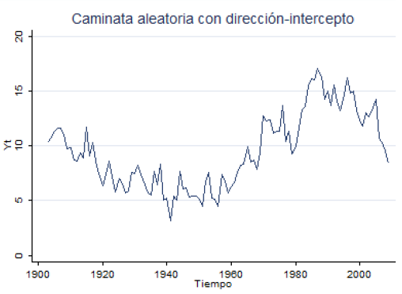
- Autoregresiva: \(x_t = \rho x_{t-1} + \varepsilon_t\) con \(-1 \leq \rho \leq 1\) - Con tendencia y autoregresiva: \(x_t = \delta + \beta T_t + \rho x_{t-1} + \varepsilon_t\)Proceso integrado de orden \(d\), \(I(d)\): se refiere al número de veces que hay que diferenciar la serie para volverla estacionaria.
- \(I(0)\): estacionaria en niveles
- \(I(1)\): requiere una diferencia
- \(I(2)\): requiere dos diferencias
- \(I(d)\): requiere \(d\) diferencias
Prueba de raíz unitaria de Dickey-Fuller (DF)
Es la prueba formal y concluyente de estacionariedad. Se basa en las tres especificaciones de caminata aleatoria:
\[x_t = \rho x_{t-1} + \varepsilon_t\] \[x_t = \alpha + \rho x_{t-1} + \varepsilon_t\] \[x_t = \delta + \beta T_t + \rho x_{t-1} + \varepsilon_t\]
Restando \(x_{t-1}\) a cada lado:
\[\Delta x_t = (\rho - 1) x_{t-1} + \varepsilon_t\] \[\Delta x_t = \alpha + (\rho - 1) x_{t-1} + \varepsilon_t\] \[\Delta x_t = \delta + \beta T_t + (\rho - 1) x_{t-1} + \varepsilon_t\]
Hipótesis:
- \(H_0: \rho = 1\) — contiene raíz unitaria, es una caminata aleatoria, NO es estacionaria.
- \(H_1: \rho \neq 1\) — NO contiene raíz unitaria, NO es caminata aleatoria, ES estacionaria.
¡Atención! El estadístico de contraste para \(\rho = 1\) no es la \(t\) usual. Dickey y Fuller (1979) y MacKinnon (1994) construyeron tablas especiales mediante simulaciones de Monte Carlo.
Ejemplo en Stata — PIB de Estados Unidos:
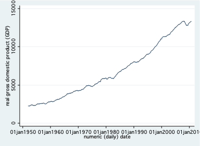
ACF y PACF del PIB:
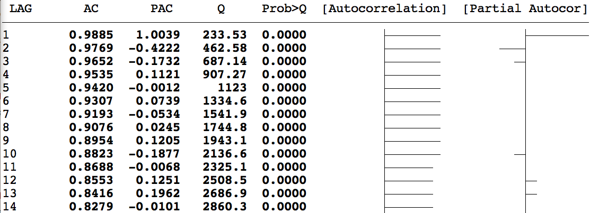
Prueba de raíz unitaria (sin tendencia):
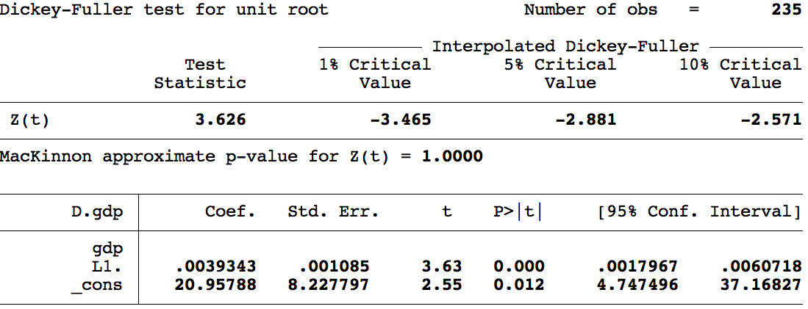
Prueba de raíz unitaria (con tendencia):
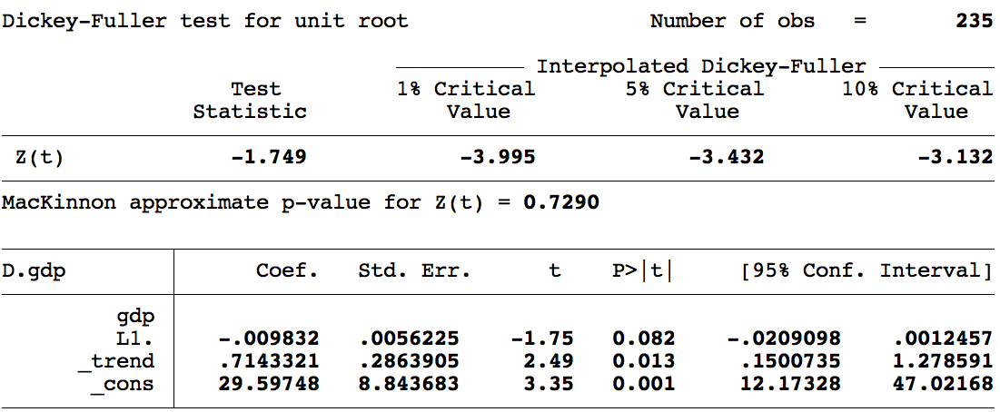
Prueba de raíz unitaria con tendencia para \(\ln\) PIB:
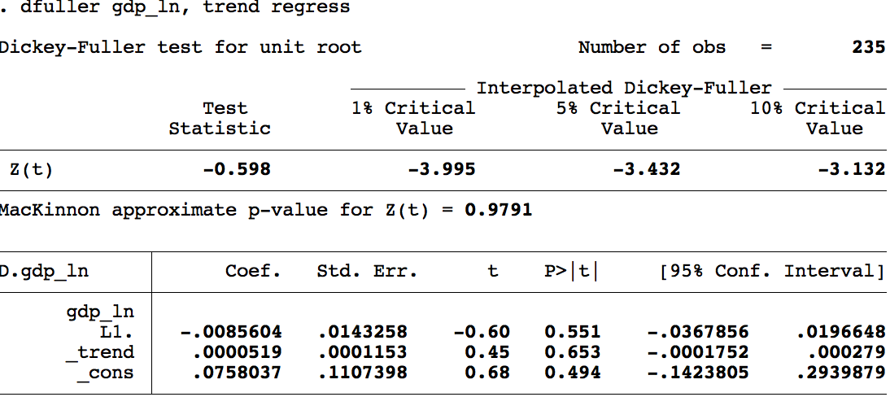
Prueba de raíz unitaria con tendencia para \(\Delta \ln\) PIB:
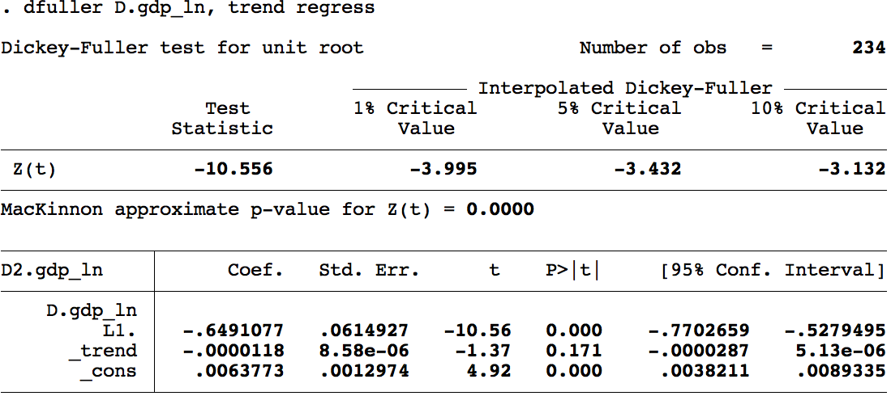
Dickey-Fuller aumentada (ADF)
La DF original es válida solo si los errores no presentan autocorrelación serial — limitación severa. La versión aumentada corrige esto agregando rezagos de la diferencia:
\[\Delta x_t = (\rho - 1) x_{t-1} + \sum_{j=1}^{\tau} b_j \Delta x_{t-j} + \varepsilon_t\]
(con las tres variantes: pura, con intercepto, con intercepto y tendencia).
Elección del número de rezagos \(\tau\):
- Criterio de Información de Akaike (AIC) o Schwarz (BIC)
- Prueba y error: incluir rezagos hasta eliminar la autocorrelación serial (Durbin-Watson)
- Usar Dickey-Fuller GLS (
dfglsen Stata), que selecciona automáticamente el número óptimo de rezagos — suele ser la mejor opción
* Dickey-Fuller con intercepto
dfuller var
* Dickey-Fuller con intercepto y tendencia
dfuller var, trend
* Dickey-Fuller aumentada con k rezagos
dfuller var, lags(k) trend
* Dickey-Fuller GLS (selección automática de rezagos)
dfgls varEjemplo en Stata — ADF aplicada al PIB:
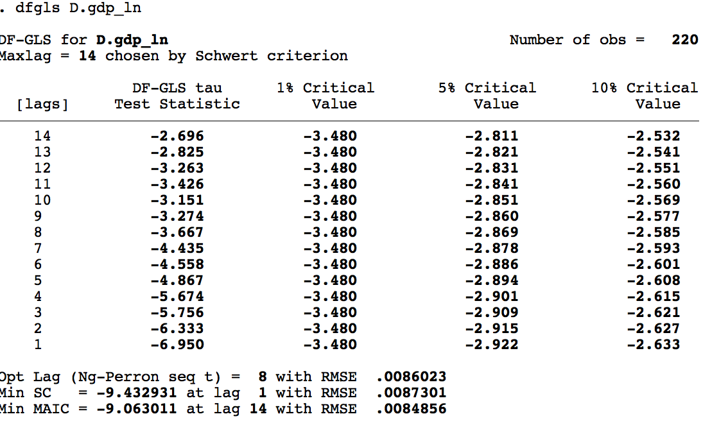
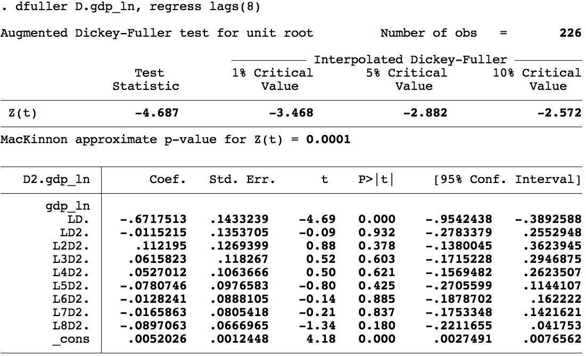
Transformación de series no estacionarias
Cuando la serie no es estacionaria, hay tres estrategias:
- Diferencias: \(\Delta x_t = x_t - x_{t-1}\)
- Diferencias de los logaritmos: \(\Delta \ln x_t\) (interpretación: tasa de crecimiento)
- Filtros de descomposición: Hodrick-Prescott (HP), Holt-Winters (HW)
Tras transformar, se vuelve a aplicar la prueba ADF para verificar que la serie transformada sí es estacionaria.
Modelos Autorregresivos y de Promedio Móvil
La idea central: el comportamiento pasado de la serie contiene información sobre su futuro y puede, en muchos casos, reemplazar la información de otras variables.
Estos modelos representan la variable en función de su propio pasado:
- Autorregresivos: \(AR(p)\)
- Promedio Móvil: \(MA(q)\)
- Mixtos: \(ARMA(p, q)\)
Importante: los modelos AR, MA y ARMA están diseñados para procesos estocásticos estacionarios.
Modelo Autorregresivo \(AR(p)\)
\[x_t = c + \alpha_1 x_{t-1} + \alpha_2 x_{t-2} + \cdots + \alpha_p x_{t-p} + \varepsilon_t\]
donde \(p\) es el rezago máximo y \(\varepsilon_t\) es ruido blanco con media cero y varianza constante.
Modelo de Promedio Móvil \(MA(q)\)
\[x_t = c + \beta_0 \varepsilon_t + \beta_1 \varepsilon_{t-1} + \beta_2 \varepsilon_{t-2} + \cdots + \beta_q \varepsilon_{t-q}\]
La serie se expresa como combinación lineal de choques de ruido blanco presentes y pasados.
Teorema de descomposición de Wold
Todo proceso estocástico \(x_t\) débilmente estacionario con media cero puede representarse como:
\[x_t = D_t + S_t\]
donde \(D_t\) es la parte determinística y \(S_t\) la parte estocástica:
\[S_t = \sum_{v=0}^{\infty} \beta_v \varepsilon_{t-v}\]
Consecuencia: cualquier proceso débilmente estacionario tiene una representación de Wold. Los modelos AR, MA y especialmente ARMA son aproximaciones finitas de esa representación.
Modelo \(ARMA(p, q)\)
\[x_t = c + \alpha_1 x_{t-1} + \cdots + \alpha_p x_{t-p} + \varepsilon_t + \beta_1 \varepsilon_{t-1} + \cdots + \beta_q \varepsilon_{t-q}\]
Combina autorregresión (memoria larga vía \(x_{t-j}\)) con promedio móvil (memoria corta vía \(\varepsilon_{t-j}\)).
Los cinco pasos de Box-Jenkins
- Identificación del modelo (orden \(p\) y \(q\)) a partir de ACF y PACF
- Estimación de parámetros
- Validación del modelo (residuos = ruido blanco)
- Pronóstico
- Validación del pronóstico
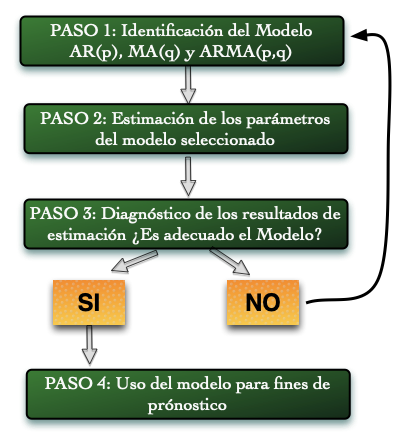
Paso 1 — Identificación
Se usa la siguiente regla práctica con base en los correlogramas teóricos:
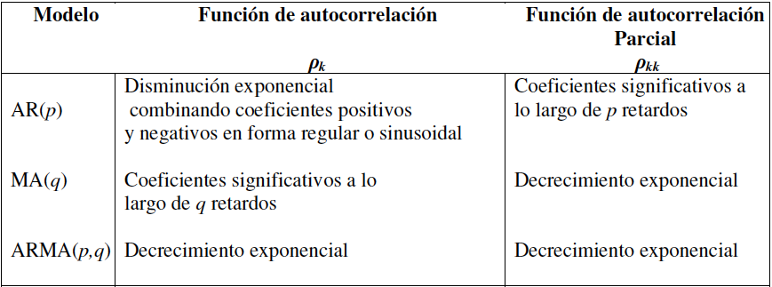
| Modelo | ACF | PACF |
|---|---|---|
| \(AR(p)\) | Decae gradualmente | Corte abrupto después del rezago \(p\) |
| \(MA(q)\) | Corte abrupto después del rezago \(q\) | Decae gradualmente |
| \(ARMA(p, q)\) | Decae gradualmente | Decae gradualmente |
Método alternativo — criterios de información. Correr el modelo para distintas combinaciones de \(p\) y \(q\) y escoger la que minimice:
\[AIC = \ln\left(\frac{\hat{\varepsilon}'\hat{\varepsilon}}{n}\right) + \frac{2k}{n}\]
\[BIC = \ln\left(\frac{\hat{\varepsilon}'\hat{\varepsilon}}{n}\right) + \frac{k \cdot \ln(n)}{n}\]
donde \(k\) es el número de parámetros y \(n\) las observaciones utilizables. Se escoge el modelo con menor valor.
Correlogramas teóricos — AR(1):
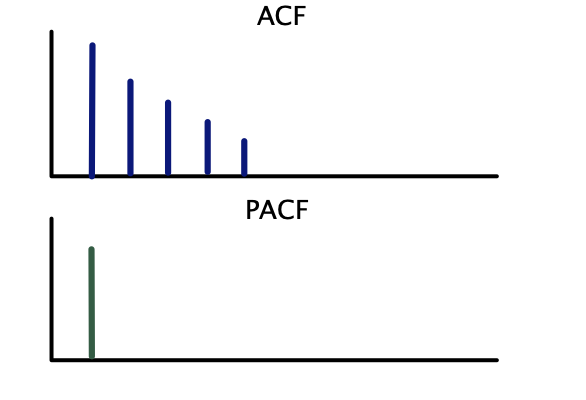
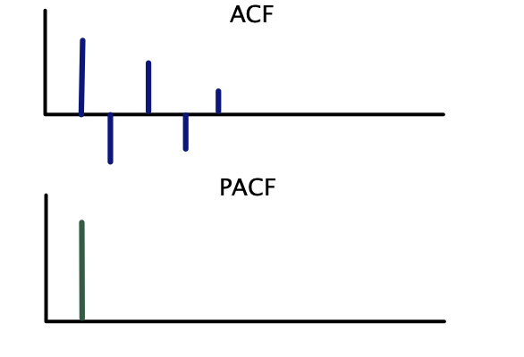
Correlogramas teóricos — AR(2):
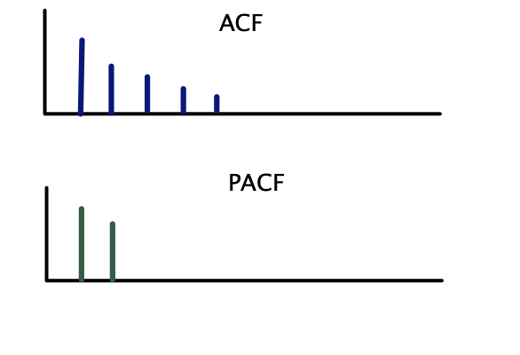
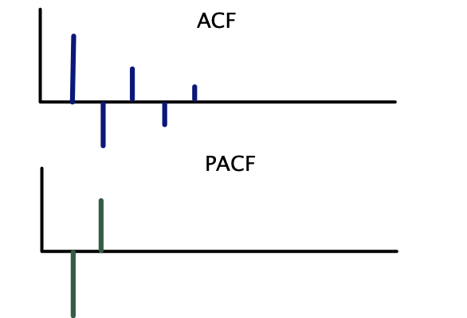
Correlogramas teóricos — MA(1):
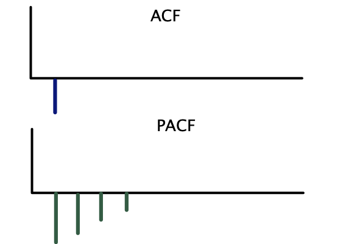
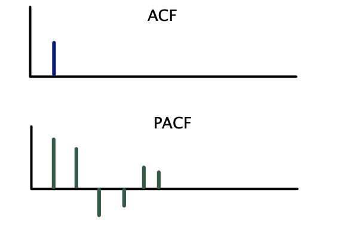
Correlogramas teóricos — MA(2):
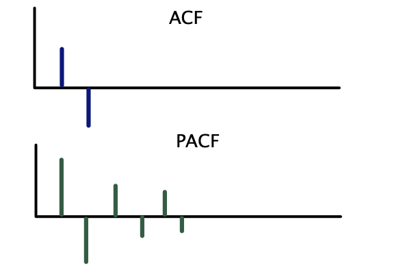
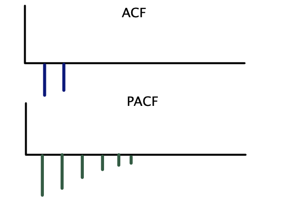
Correlogramas teóricos — ARMA(1,1):
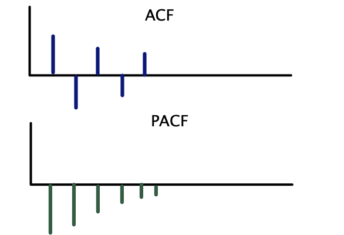
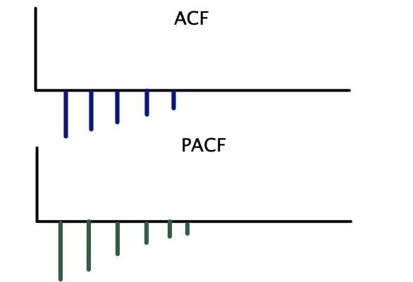
Paso 2 — Estimación de parámetros
Existen tres métodos principales:
- Método de Momentos (Yule-Walker) — solo para \(AR(p)\), menos usado.
- Mínimos Cuadrados Ordinarios — válido para AR y MA.
- Máxima Verosimilitud — el más usado, especialmente para ARMA.
Yule-Walker para \(AR(p)\): se estiman las autocovarianzas y se resuelven las \(p\) ecuaciones simultáneas:
\[\hat{R}(\tau) + \hat{\alpha}_1 \hat{R}(\tau - 1) + \cdots + \hat{\alpha}_p \hat{R}(\tau - p) = 0, \quad \tau = 1, \ldots, p\]
MCO para \(AR(1)\): minimizar \(\sum (x_t - \alpha x_{t-1})^2\). En forma matricial:
\[\hat{\alpha} = (X'X)^{-1} X' x\]
Máxima verosimilitud condicional: asumiendo errores ruido blanco gaussianos,
\[f(\varepsilon_{p+1}, \ldots, \varepsilon_n) = \left(\frac{1}{2\pi\sigma_\varepsilon^2}\right)^{(n-p)/2} \exp\left(-\frac{1}{2\sigma_\varepsilon^2}\sum_{t=p+1}^{n} \varepsilon_t^2\right)\]
Se toman logaritmos y se maximiza la log-verosimilitud para hallar \(\hat{\alpha}\).
Paso 3 — Validación del modelo
Se analiza el correlograma de la ACF y la PACF de los residuos del modelo estimado.
Diagnóstico esperado: los coeficientes de autocorrelación de los residuos deben ser estadísticamente iguales a cero — es decir, los residuos deben comportarse como ruido blanco.
¡Atención! Si los residuos no son ruido blanco, hay que volver al paso 1 y re-especificar el modelo.
Paso 4 — Pronóstico
\(AR(1)\):
\[x_t = c + \alpha_1 x_{t-1} + \varepsilon_t \quad \Rightarrow \quad \hat{x}_{t+1} = \hat{c} + \hat{\alpha}_1 x_t\]
\(MA(1)\):
\[x_{t+1} = c + \varepsilon_{t+1} + \beta_1 \varepsilon_t \quad \Rightarrow \quad \hat{x}_{t+1} = \hat{c} + \hat{\beta}_1 \varepsilon_t\]
\(ARMA(p, q)\):
\[\hat{x}_{t+1} = \hat{c} + \hat{\alpha}_1 x_t + \cdots + \hat{\alpha}_p x_{t+1-p} + \hat{\beta}_1 \varepsilon_t + \cdots + \hat{\beta}_q \varepsilon_{t+1-q}\]
Paso 5 — Validación del pronóstico
- Gráfica: comparar la trayectoria temporal de valores observados y proyectados.
- Intervalos de confianza: una buena predicción produce intervalos de confianza estrechos. Si los intervalos crecen rápido con el horizonte, el modelo solo sirve para muy corto plazo.
Ventajas y desventajas de los modelos ARMA
Ventajas:
- Excelente herramienta para pronóstico de corto plazo.
- Existen procedimientos formales (AIC, BIC, validación de residuos) para comparar modelos alternativos.
Desventajas:
- Requieren muestras grandes — se recomiendan al menos 30 observaciones (idealmente más).
- No tienen un mecanismo sencillo para incorporar nuevos datos: hay que reestimar.
* Identificación: ACF y PACF
ac y, lags(20)
pac y, lags(20)
* Estimar un ARMA(1,1)
arima y, arima(1,0,1)
* Estimar un ARIMA(1,1,1) sobre la serie en niveles
arima y, arima(1,1,1)
* Diagnóstico de residuos
predict r, residuals
corrgram r, lags(20)
wntestq r
* Pronóstico fuera de muestra
predict yhat, y dynamic(tq(2014q1))Ejemplo en Stata — estimación ARMA y pronóstico del PIB:
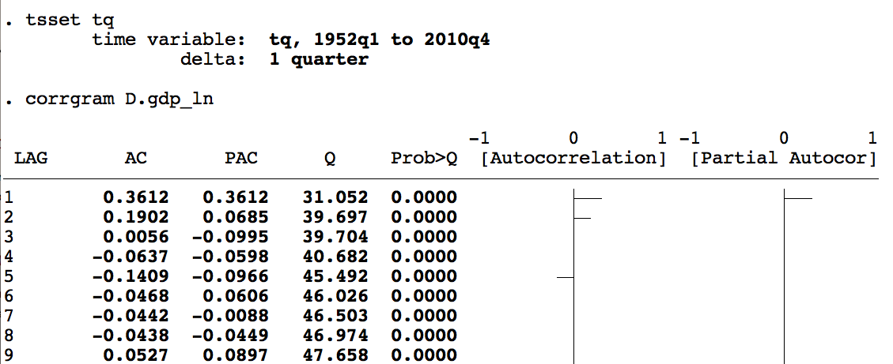
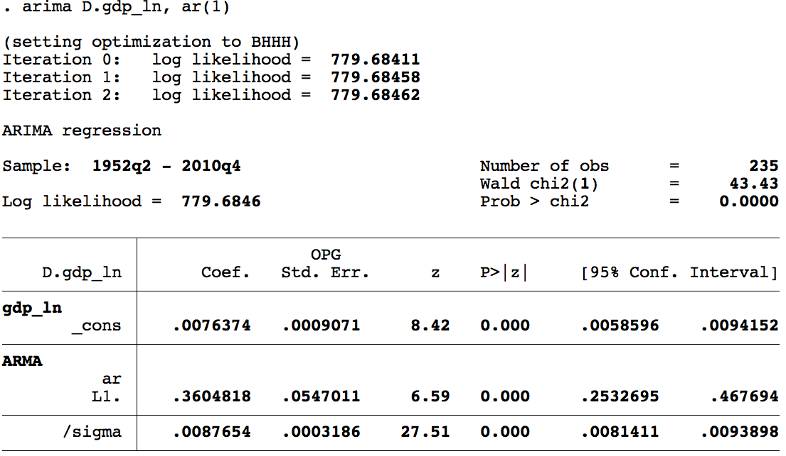
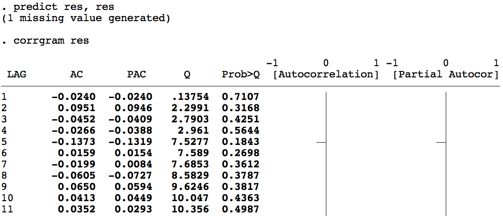
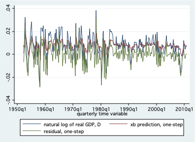
Pronóstico:
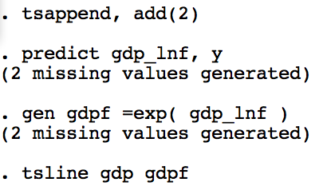
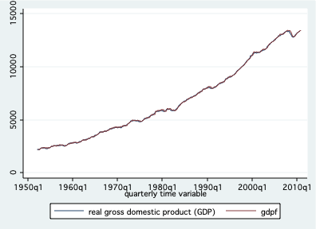
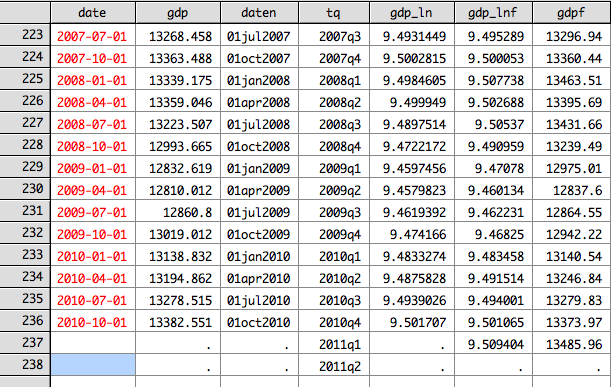
Para practicar estacionariedad, ACF, PACF, raíz unitaria y modelos AR, resuelva las partes E, F y G del Problem Set 5: Variable dependiente binaria y series de tiempo.
Lecturas recomendadas
- Enders (2014) — Applied Econometric Time Series, 4ª ed. — referencia estándar para el curso, cubre ARMA, raíz unitaria y Box-Jenkins.
- Hamilton (1994) — Time Series Analysis — tratado de referencia avanzado.
- Box, Jenkins & Reinsel (2008) — Time Series Analysis: Forecasting and Control — la metodología original.
- Dickey & Fuller (1979) — “Distribution of the estimators for autoregressive time series with a unit root”, JASA.